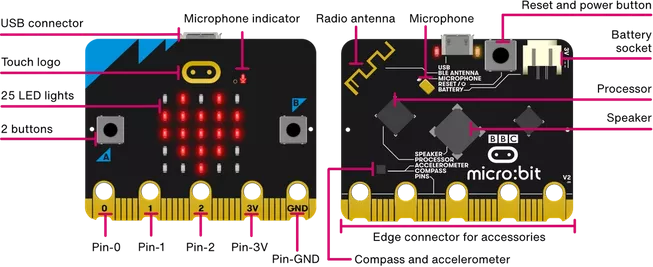
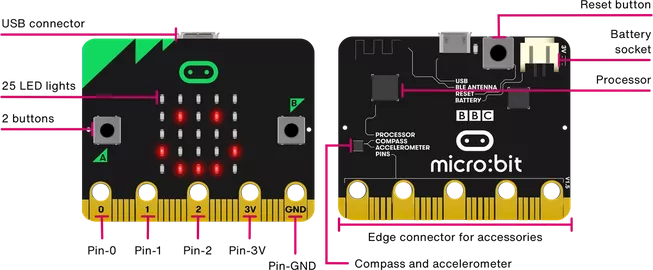

micro:bit
Meet micro:bit
The BBC micro:bit is a pocket-sized computer that introduces you to how software and hardware work together. It has an LED light display, buttons, sensors and many input/output features that, when programmed, let it interact with you and your world.
See micro:bit.
V2

V1

micro:bit extension
The micro:bit extension is an extension module developed based on Scratch 3.0, which connects to the micro:bit development board through Bluetooth for real-time programming of the development. In real-time programming, the operation effect can be seen in time and can interact with the computer. The Bluetooth connection between the computer and the development board should be maintained during programming.
Firmware
The micro:bit development board is required to download the latest custom firmware (scratch-microbit-1.2.0.hex), It can support both micro:bit V1 development board and micro:bit V2 development board.
Drag and drop to install firmware
After downloading the firmware, prepare the micro:bit development board (do not connect the USB port of the computer), and then install the firmware by following the steps:
- Insert the micro:bit development board into the USB port of the PC (do not press the BOOTSEL button).
- micro:bit development board will be recognized as mass storage device.
- Put the downloaded firmware file (HEX file) on the MICROBIT volume.
- The micro:bit board will restart automatically and then start programming.
Next you can program the micro:bit board using the micro:bit extension.
Connecting to micro:bit
| Click the exclamation mark to start the connection | Select micro:bit board |
|---|---|
 |
 |
Now start having fun coding!